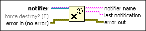
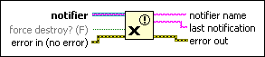

Release Notifier Function
Owning Palette: Notifier Operations Functions
Requires: Base Development System
Releases a reference to a notifier.

 Add to the block diagram Add to the block diagram |
 Find on the palette Find on the palette |
Owning Palette: Notifier Operations Functions
Requires: Base Development System
Releases a reference to a notifier.

| Add to the block diagram |
Find on the palette |
 |
notifier is a reference to a notifier. Use the Obtain Notifier function to obtain a notifier reference. |
 |
force destroy? indicates whether to destroy the notifier. If FALSE (default) and you want to destroy the notifier, call the Release Notifier function a number of times equal to the number of times you obtained a reference to the notifier or stop all VIs using the notifier reference. If TRUE, the function destroys the notifier and you do not have to call the function multiple times or stop all VIs using the notifier reference. |
 |
error in describes error conditions that occur before this node runs. With the following exception, this input provides standard error in functionality.
This node runs normally even if an error occurred before this node runs. |
 |
notifier name specifies the name of the notifier. |
 |
last notification is the last uncancelled notification sent to the notifier. If no notification is available, the function returns the zero value for the element data type you wired in the Obtain Notifier function. This data type changes to match the subtype of notifier. |
 |
error out contains error information. This output provides standard error out functionality. |
You can use the Obtain Notifier function to obtain a reference to the same notifier with the same name multiple times. To destroy a notifier, call the Release Notifier function a number of times equal to the number of times you obtained a reference to the notifier or stop all VIs using the notifier reference.
If force destroy? is TRUE, this function releases all references to the notifier and destroys the notifier.
Any Wait on Notification or Wait on Notification from Multiple functions waiting on the notifier time out and return error code 1122.